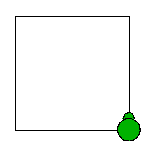

Turtle graphics is a pedagogical tool for novices to learn programming by maneuvering a turtle on a Cartesian plane. A turtle has two main attributes: a position and an orientation.
Drawing with the turtle involves moving the turtle with commands relative to its current position, e.g. "move forward 10 steps" or "turn left 120 degrees". Moving the turtle will result in a line drawn following its path, and allow us to build complex shapes and composite figures.
As an example, assuming that the turtle faces north at the start, the following
jshell> void triangle() {
...> Turtle t = new Turtle();
...> t.moveForward(100);
...> t.turnLeft(120);
...> t.moveForward(100);
...> t.turnLeft(120);
...> t.moveForward(100);
...> t.turnLeft(120);
...> }
| created method triangle()
jshell> triangle()
will draw the figure below:
Notice that turtle references a graphical Turtle object with methods forward and left; however these methods have void return types which do not return any values. In other words, Turtle is mutable and drawing with the turtle can only be achieved via side effects!
In this task, you are to design a functional turtle as a wrapper around a mutable turtle. In addition, since we cannot make use of a graphical turtle, we can only rely on a console-based alternative, as well as your imagination.
The Terrapin class that implements the Movable interface has been provided for you. Terrapins can only move forward and make a number of 90-degree left turns. A new terrapin object is positioned at location (0, 0) and facing north (0=north; 1=west; 2=south; 3=east).
jshell> Terrapin t = new Terrapin() Terrapin @ (0, 0) faces 0 t ==> Terrapin jshell> t.forward(100) // move north 100 steps Terrapin @ (100, 0) faces 0 jshell> t.left(1) // turn left 90 degrees to face west Terrapin @ (100, 0) faces 1 jshell> t.forward(100) // move west 100 steps Terrapin @ (100, -100) faces 1 jshell> t.left(1) // turn left 90 degrees to face south Terrapin @ (100, -100) faces 2 jshell> t.forward(100) // move south 100 steps Terrapin @ (0, -100) faces 2 jshell> t.left(1) // turn left 90 degrees to face east Terrapin @ (0, -100) faces 3 jshell> t.forward(100) // move east 100 steps Terrapin @ (0, 0) faces 3 jshell> t.left(1) // turn left 90 degrees to face north; back to starting state Terrapin @ (0, 0) faces 0
Pictorially, the end state should look like this:

Notice that we cannot construct a pipeline of Terrapin movements; moreover each movement is eagerly evaluated.
Your task is to wrap Terrapin (or any other Movable object) around a Functle so as to make it operate functionally.
This task comprises a number of levels. You are required to complete ALL levels.
The following are the constraints imposed on this task.
In general, you should keep to the constructs and programming discipline instilled throughout the module.
The Pair class with an additional of method to simplify the creation of Pair objects is provided for you.
You have been provided the Terrapin class that implements the given Movable<T> interface reproduced below. You are NOT ALLOWED to change the Movable interface or Terrapin class.
interface Movable<T> {
public void turnLeft(int theta);
public void moveForward(int step);
public boolean equals(Supplier<T> supplier);
}
Write a Functle<T> class that wraps around a Movable<T> object. A Functle object is created via the of() factory method that takes no arguments. Note that all constructors MUST BE declared private.
Include the forward method that takes in an integer steps, as well as the left method that takes in an integer theta.
Also include a run method that takes in an object of type T. A Functle<T> pipeline is not evaluated until the run method is invoked.
jshell> Functle<Terrapin> t = Functle.<Terrapin>of() t ==> Functle jshell> t.forward(100) $.. ==> Functle jshell> t.left(1) $.. ==> Functle jshell> t.run(new Terrapin()) Terrapin @ (0, 0) faces 0 jshell> t.forward(100).run(new Terrapin()) Terrapin @ (0, 0) faces 0 Terrapin @ (100, 0) faces 0 jshell> t.left(1).run(new Terrapin()) Terrapin @ (0, 0) faces 0 Terrapin @ (0, 0) faces 1
In this level, you may assume that the Functle pipeline comprises only one movement.
It is interesting to note that in the above examples, new Terrapin objects are passed to the run method. What if an existing Terrapin is passed instead?
jshell> Terrapin p = new Terrapin() Terrapin @ (0, 0) faces 0 p ==> Terrapin jshell> t.forward(100).run(p) Terrapin @ (100, 0) faces 0 jshell> t.forward(100).run(p) Terrapin @ (200, 0) faces 0
Since p references a mutable object, the behaviour of the Functle pipeline is no longer pure, i.e. the last two test cases give different results. Indeed, one cannot make something pure out of impure constructs.
As such, test cases in subsequent levels will be illustrated by passing newly created objects into the run method, so as to simplify the understanding of how each pipeline works.
We now create longer Functle pipelines comprising more movements.
jshell> Functle<Terrapin> t = Functle.<Terrapin>of() t ==> Functle jshell> t.run(new Terrapin()) Terrapin @ (0, 0) faces 0 jshell> t.forward(100).run(new Terrapin()) Terrapin @ (0, 0) faces 0 Terrapin @ (100, 0) faces 0 jshell> t.forward(100).left(1).run(new Terrapin()) Terrapin @ (0, 0) faces 0 Terrapin @ (100, 0) faces 0 Terrapin @ (100, 0) faces 1 jshell> t.forward(100).forward(100).left(1).left(1).run(new Terrapin()) Terrapin @ (0, 0) faces 0 Terrapin @ (100, 0) faces 0 Terrapin @ (200, 0) faces 0 Terrapin @ (200, 0) faces 1 Terrapin @ (200, 0) faces 2
Also include the backward and right methods to allow for backward movements and 90-degree right turns.
jshell> t.backward(100).right(1).run(new Terrapin()) Terrapin @ (0, 0) faces 0 Terrapin @ (-100, 0) faces 0 Terrapin @ (-100, 0) faces 3
Note that as Functle can take in any Movable object, you should not be tracking specific positional or orientation values within the Functle class.
Include the reverse() method to reverse the Functle path back to its starting state. Take note that reverse() does not undo the path since any additional movement will result in a path drawn. In other words, reversing will essentially draw over the path with another reverse path.
jshell> Functle<Terrapin> t = Functle.<Terrapin>of() t ==> Functle jshell> t.backward(100).right(1).run(new Terrapin()) Terrapin @ (0, 0) faces 0 Terrapin @ (-100, 0) faces 0 Terrapin @ (-100, 0) faces 3 jshell> t.backward(100).right(1).reverse().run(new Terrapin()) Terrapin @ (0, 0) faces 0 Terrapin @ (-100, 0) faces 0 Terrapin @ (-100, 0) faces 3 Terrapin @ (-100, 0) faces 0 Terrapin @ (0, 0) faces 0 jshell> t.backward(100).reverse().right(1).run(new Terrapin()) Terrapin @ (0, 0) faces 0 Terrapin @ (-100, 0) faces 0 Terrapin @ (0, 0) faces 0 Terrapin @ (0, 0) faces 3 jshell> t.backward(100).reverse().right(1).reverse().run(new Terrapin()) Terrapin @ (0, 0) faces 0 Terrapin @ (-100, 0) faces 0 Terrapin @ (0, 0) faces 0 Terrapin @ (0, 0) faces 3 Terrapin @ (0, 0) faces 0 jshell> t.backward(100).right(1).reverse().reverse().run(new Terrapin()) Terrapin @ (0, 0) faces 0 Terrapin @ (-100, 0) faces 0 Terrapin @ (-100, 0) faces 3 Terrapin @ (-100, 0) faces 0 Terrapin @ (0, 0) faces 0
Note in the last test case that reversing a reversed path will have no effect. This is to avoid ambiguities related to reversing any prior reversal(s).
Write the method andThen that combines two paths such that r.andThen(s) will result in a path r, followed by s, resulting in a single continuous path.
jshell> Functle<Terrapin> t = Functle.<Terrapin>of().forward(100).right(1) t ==> Functle jshell> t.andThen(t).run(new Terrapin()) Terrapin @ (0, 0) faces 0 Terrapin @ (100, 0) faces 0 Terrapin @ (100, 0) faces 3 Terrapin @ (100, 100) faces 3 Terrapin @ (100, 100) faces 2
Take note of how the reverse() method behaves in the test cases below:
jshell> t.andThen(t).reverse().run(new Terrapin()) Terrapin @ (0, 0) faces 0 Terrapin @ (100, 0) faces 0 Terrapin @ (100, 0) faces 3 Terrapin @ (100, 100) faces 3 Terrapin @ (100, 100) faces 2 Terrapin @ (100, 100) faces 3 Terrapin @ (100, 0) faces 3 Terrapin @ (100, 0) faces 0 Terrapin @ (0, 0) faces 0 jshell> t.andThen(t.reverse()).run(new Terrapin()) Terrapin @ (0, 0) faces 0 Terrapin @ (100, 0) faces 0 Terrapin @ (100, 0) faces 3 Terrapin @ (100, 100) faces 3 Terrapin @ (100, 100) faces 2 Terrapin @ (100, 100) faces 3 Terrapin @ (100, 0) faces 3
Note that each path that is joined is treated as separate paths. In the case of t.andThen(t), the resulting path is a join of two paths that coincidentally describe the same sequence of movements.
Now include a method loop(n) that takes in an integer n >= 0 and loops the Functle path for n number of times.
jshell> t.loop(2).run(new Terrapin()) Terrapin @ (0, 0) faces 0 Terrapin @ (100, 0) faces 0 Terrapin @ (100, 0) faces 3 Terrapin @ (100, 100) faces 3 Terrapin @ (100, 100) faces 2 jshell> t.loop(4).run(new Terrapin()) Terrapin @ (0, 0) faces 0 Terrapin @ (100, 0) faces 0 Terrapin @ (100, 0) faces 3 Terrapin @ (100, 100) faces 3 Terrapin @ (100, 100) faces 2 Terrapin @ (0, 100) faces 2 Terrapin @ (0, 100) faces 1 Terrapin @ (0, 0) faces 1 Terrapin @ (0, 0) faces 0
The last test case forms a square.
We are now going to make the Functle object loop by itself until it comes home (i.e. the starting state), thus forming a regular polygon.
Hint: Imagine you give your pet terrapin a path and ask it to follow once; if it finds itself lost, it is smart enough to backtrack and come home. Then you ask it to repeat the path twice and so on, until repeating the path for the nth time brings it home.
jshell> Functle<Terrapin> t = Functle.<Terrapin>of().forward(100).right(1) t ==> Functle jshell> t.comeHome().run(new Terrapin()) Terrapin @ (0, 0) faces 0 Terrapin @ (100, 0) faces 0 Terrapin @ (100, 0) faces 3 Terrapin @ (100, 0) faces 0 Terrapin @ (0, 0) faces 0 Terrapin @ (100, 0) faces 0 Terrapin @ (100, 0) faces 3 Terrapin @ (100, 100) faces 3 Terrapin @ (100, 100) faces 2 Terrapin @ (100, 100) faces 3 Terrapin @ (100, 0) faces 3 Terrapin @ (100, 0) faces 0 Terrapin @ (0, 0) faces 0 Terrapin @ (100, 0) faces 0 Terrapin @ (100, 0) faces 3 Terrapin @ (100, 100) faces 3 Terrapin @ (100, 100) faces 2 Terrapin @ (0, 100) faces 2 Terrapin @ (0, 100) faces 1 Terrapin @ (0, 100) faces 2 Terrapin @ (100, 100) faces 2 Terrapin @ (100, 100) faces 3 Terrapin @ (100, 0) faces 3 Terrapin @ (100, 0) faces 0 Terrapin @ (0, 0) faces 0 Terrapin @ (100, 0) faces 0 Terrapin @ (100, 0) faces 3 Terrapin @ (100, 100) faces 3 Terrapin @ (100, 100) faces 2 Terrapin @ (0, 100) faces 2 Terrapin @ (0, 100) faces 1 Terrapin @ (0, 0) faces 1 Terrapin @ (0, 0) faces 0
It is worth noting that t.comeHome().reverse().run(new Terrapin()) should give the same output as above.
You may assume that the given path is one that will eventually form a regular polygon.
Lastly, you are also reminded that your Functle implementation should be able to work for any Movable object.